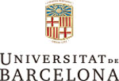

Grupo Hotusa es uno de los mayores grupos turísticos de España y uno de los mayores consorcios
hoteleros del mundo. Con 40 años de historia hoy Grupo Hotusa, engloba distintas empresas del sector. El grupo
se articula en dos grandes ámbitos: la división turística, conformada por sociedades que prestan servicios a
establecimientos hoteleros; y la división hotelera, que engloba la explotación de más de un centenar de
hoteles. Una parte importante de estos hoteles de explotación conforman la cadena Eurostars Hotels. Las señas
de identidad de Eurostars Hotels son la calidad, las grandes ciudades, la cultura y la vanguardia.
RBA Libros pertenece al Grupo RBA, uno de los grupos de comunicación líderes en el mercado español. Con
más de 3.600 títulos editados, RBA Libros es todo un referente en España y en América Latina.
RBA Libros engloba sellos de larga trayectoria o de gran proyección como Gredos, Molino, Integral, La Magrana
o National Geographic. El abanico de géneros de RBA Libros es sumamente amplio e incluye ficción, no ficción,
infantil, desarrollo personal, salud, gastronomía y viajes. Las obras ganadoras del Premio Eurostars Hotels de
Narrativa de Viajes se publican bajo el sello de National Geographic y se distribuyen en todos los puntos de
venta habituales de RBA Libros.
Universitat de Barcelona
La Universitat de Barcelona es uno de los mayores y más acreditados centros universitarios de España.
Actualmente comprende 16 facultades y escuelas universitarias, más de 73 grados, más de 150 masters, y en
torno a 90.000 estudiantes anuales y 5.000 profesores. Más de 1,5 millones de volúmenes llenan los estantes de
las distintas bibliotecas. La Universitat de Barcelona, a través del Catedrático de Literatura Española,
Adolfo Sotelo Vázquez, es un puntal del Premio de Narrativa de Viajes: se encarga, entre otras funciones, de
la recepción y gestión de manuscritos, así como de la función lectora en primera instancia.